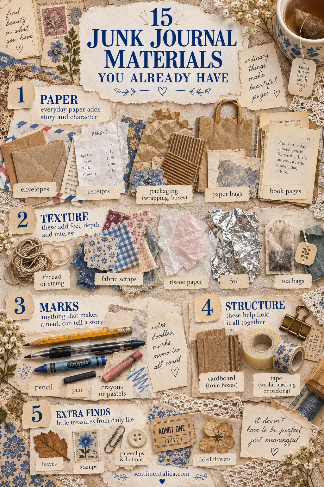
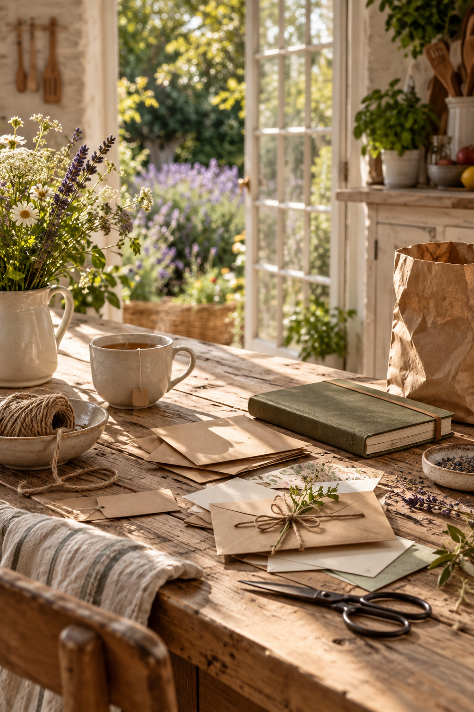

Junk journaling began with ordinary paper, not a perfect shopping basket. Before buying supplies, look through recycling, sewing leftovers, stationery drawers and yesterday’s pockets. Useful materials are probably already there.

Paper for story and character
- Envelopes become pockets, flaps and hidden writing spaces.
- Receipts preserve dates, places and the texture of an ordinary day. Remove sensitive information first.
- Packaging offers lettering, color blocks and sturdy card.
- Paper bags make warm neutral backgrounds and durable pockets.
- Discarded book pages add language and age. Use damaged books rather than destroying something valuable.
Materials that add texture
- Thread or string can tie a tag, wrap a cluster or create a stitched line.
- Fabric scraps soften hard paper edges and reinforce tabs.
- Tissue paper creates translucent layers with very little bulk.
- Clean foil adds a tiny reflective accent. Flatten sharp edges carefully.
- Dried tea bags provide translucent stained paper once completely clean and dry.
Simple tools for marks
- A pencil is enough for shading, outlines and handwriting.
- An ordinary pen records the details that make a page personal.
- Crayons or pastels add broad imperfect color and playful texture.
Structure from the recycling bin
- Thin cardboard becomes covers, tags, tabs and pocket bases.
- Household tape can hinge a flap or hold an edge. Test old or unknown tape on a scrap first.
A few bonus finds
Paperclips, spare buttons, stamps, pressed leaves and dried flowers can all work. Keep natural items dry and flat, and avoid anything oily, damp, mouldy or likely to attract insects.

Sort by job rather than by beauty: paper, texture, marks and structure. When every material has a purpose, everyday objects stop feeling like clutter and begin to tell the story of where your page came from.
Prepare found materials safely
Flatten crumpled paper beneath books, wipe clean packaging and let tea bags dry completely before storing them. Avoid food residue, strong oils, unknown sticky surfaces and anything damp. If a receipt is important, photograph it because thermal printing can fade.
Test pens and adhesives on a hidden corner. Glossy packaging may resist water-based ink, while thin tissue can tear under wet glue. These are not reasons to discard the material; they simply tell you how to use it.
Make one no-shopping page
Choose one envelope as the base. Add a paper-bag strip for warmth, a piece of packaging for color and thread for texture. Write directly with the pen you already own. If the composition needs structure, mount the envelope on cereal-box card cut slightly smaller than the page.
The result will often feel more personal than a page built entirely from coordinated supplies because its materials come from your actual rooms and routines. Let ordinary printing, folds and worn edges remain visible. Those marks are evidence, not flaws.